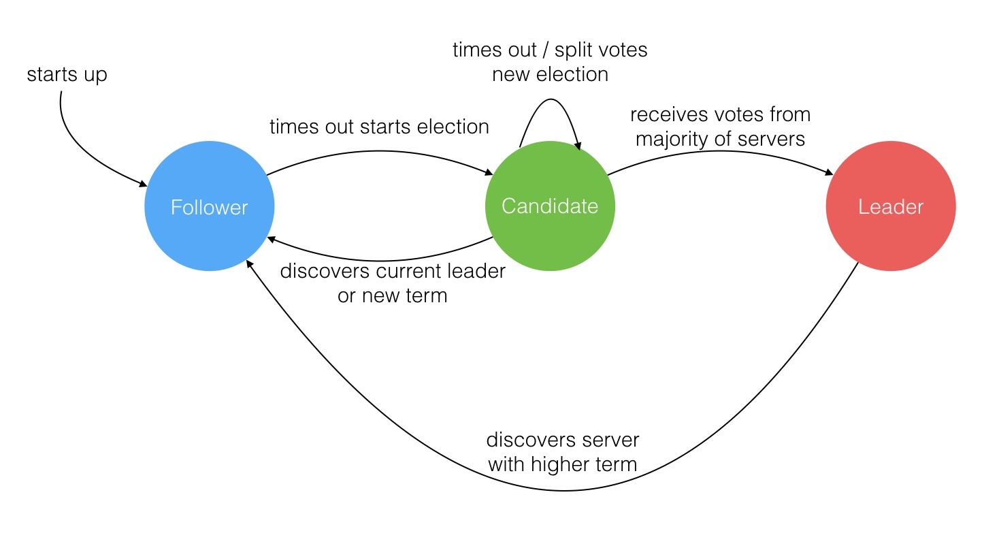
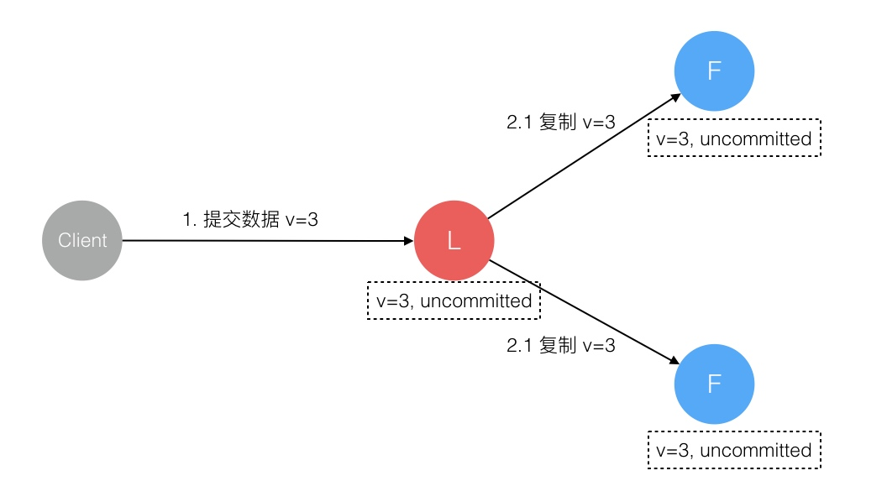
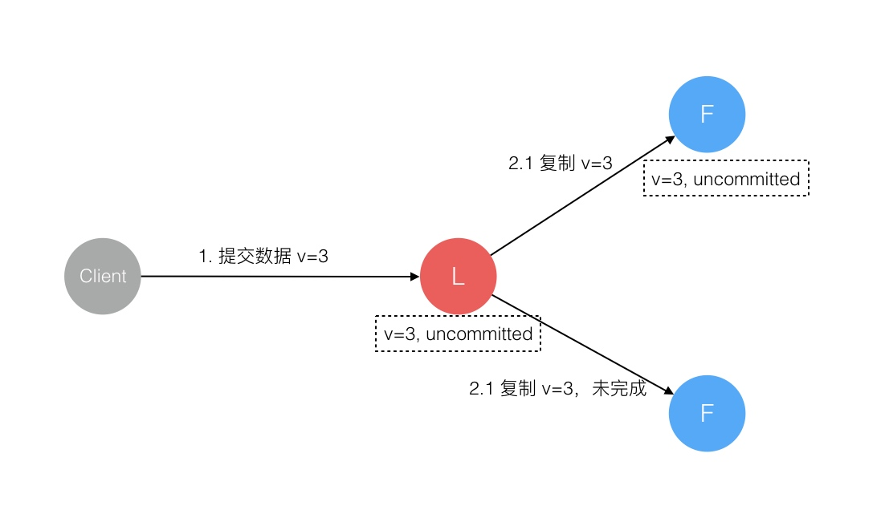
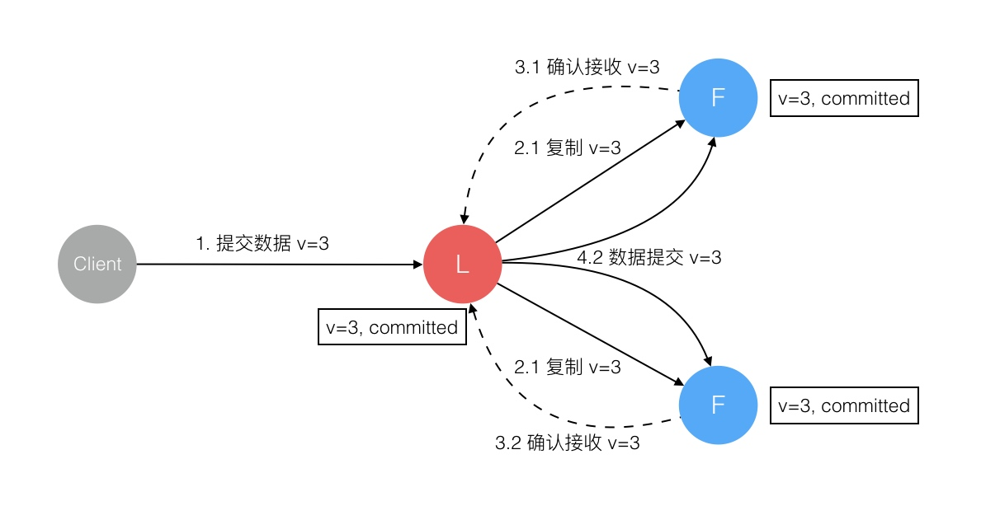

分布式一致性
拜占庭将军问题
拜占庭位于如今的土耳其的伊斯坦布尔，是东罗马帝国的首都。由于当时拜占庭罗马帝国国土辽阔，为了防御目的，因此每个军队都分隔很远，将军与将军之间只能靠信差传消息。在战争的时候，拜占庭军队内所有将军必需达成 一致的共识，决定是否有赢的机会才去攻打敌人的阵营。但是，在军队内有可能存有叛徒和敌军的间谍，左右将军们的决定又扰乱整体军队的秩序，在进行共识时，结果并不代表大多数人的意见。这时候，在已知有成员不可靠的情况下，其余忠诚的将军在不受叛徒或间谍的影响下如何达成一致的协议，拜占庭问题就此形成。拜占庭假设是对现实世界的模型化，由于硬件错误、网络拥塞或断开以及遭到恶意攻击，计算机和网络可能出现不可预料的行为。
疑问：
- 类似拜占庭将军这样的分布式一致性问题是否有解？
- 如果有解的话需要满足什么样的条件？
- 在特定前提条件的基础上，提出一种解法。
Raft 协议的易理解性描述
由Raft协议组织的集群中有三类角色：
- Leader;
- Follower;
- Candidate;


选出 Leader 后，Leader 通过定期向所有 Follower 发送心跳信息维持其统治。若 Follower 一段时间未收到 Leader 的心跳则认为 Leader 可能已经挂了再次发起选主过程。
** Leader 节点对一致性的影响 **

主节点可能在任意阶段挂掉， 如何保证数据一致性：
- 数据到达Leader节点前

- 数据到达 Leader 节点，但未复制到 Follower 节点
这个阶段 Leader 挂掉，数据属于未提交状态，Client 不会收到 Ack 会认为超时失败可安全发起重试。Follower 节点上没有该数据，重新选主后 Client 重试重新提交可成功。原来的 Leader 节点恢复后作为 Follower 加入集群重新从当前任期的新 Leader 处同步数据，强制保持和 Leader 数据一致。

- 数据到达 Leader 节点，成功复制到 Follower 所有节点，但还未向 Leader 响应接收： 这个阶段 Leader 挂掉，虽然数据在 Follower 节点处于未提交状态（Uncommitted）但保持一致，重新选出 Leader 后可完成数据提交，此时 Client 由于不知到底提交成功没有，可重试提交。针对这种情况 Raft 要求 RPC 请求实现幂等性，也就是要实现内部去重机制。
 - 数据到达 Leader 节点，成功复制到 Follower 部分节点，但还未向 Leader 响应接收
这个阶段 Leader 挂掉，数据在 Follower 节点处于未提交状态（Uncommitted）且不一致，Raft 协议要求投票只能投给拥有最新数据的节点。所以拥有最新数据的节点会被选为 Leader 再强制同步数据到 Follower，数据不会丢失并最终一致。

5. 数据到达 Leader 节点，成功复制到 Follower 所有或多数节点，数据在 Leader 处于已提交状态，但在 Follower 处于未提交状态
这个阶段 Leader 挂掉，重新选出新 Leader 后的处理流程和阶段 3 一样。

6. 数据到达 Leader 节点，成功复制到 Follower 所有或多数节点，数据在所有节点都处于已提交状态，但还未响应 Client
这个阶段 Leader 挂掉，Cluster 内部数据其实已经是一致的，Client 重复重试基于幂等策略对一致性无影响。

- 网络分区导致的脑裂情况，出现双 Leader
网络分区将原先的 Leader 节点和 Follower 节点分隔开，Follower 收不到 Leader 的心跳将发起选举产生新的 Leader。这时就产生了双 Leader，原先的 Leader 独自在一个区，向它提交数据不可能复制到多数节点所以永远提交不成功。向新的 Leader 提交数据可以提交成功，网络恢复后旧的 Leader 发现集群中有更新任期（Term）的新 Leader 则自动降级为 Follower 并从新 Leader 处同步数据达成集群数据一致。